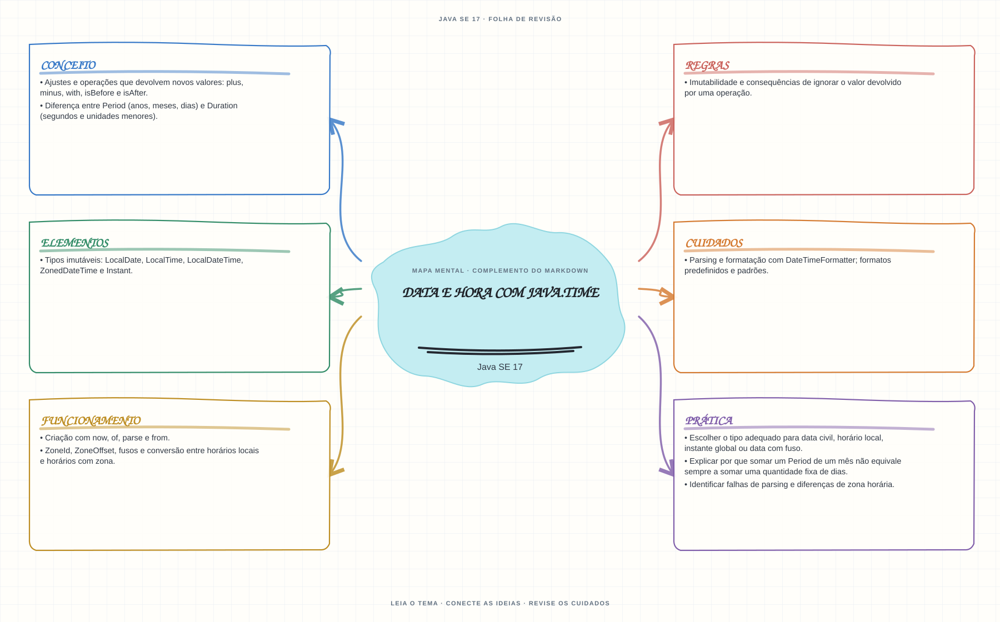

Ver mapa mental deste assuntoEscolher entre data civil, horário local, instante e horário associado a fuso; reconhecer operações imutáveis.
Primeiro contato: aprenda o conceito e pratique antes de consultar os detalhes de prova. Voltar aos fundamentos se algum termo ainda for novo.
- Leia o objetivo e localize a ideia principal no conteúdo abaixo.
- Preveja o resultado, compile e execute o exemplo.
- Faça a atividade sem copiar a solução e confira a checagem comentada.
EXEMPLO DE CONSOLE
Veja a regra em execução
Antes de executar, anote sua previsão. Compile o exemplo com o JDK e compare a saída observada com as regras deste assunto.
Comandos para compilar e executar
javac -d target/bin src/01-valores-texto-e-datas/data-e-hora-java-time/DataEHoraJavaTimeExample.java
java -cp target/bin DataEHoraJavaTimeExampleA execução imprime o resultado no console para você comparar com sua previsão.
Consultar código-fonte: DataEHoraJavaTimeExample.java
import java.time.LocalDate;
import java.time.LocalDateTime;
import java.time.Period;
import java.time.ZoneId;
import java.time.ZonedDateTime;
import java.time.format.DateTimeFormatter;
public class DataEHoraJavaTimeExample {
public static void main(String[] args) {
System.out.println("=== API de data e hora java.time ===");
LocalDate inicio = LocalDate.of(2025, 1, 31);
LocalDate depoisDeUmMes = inicio.plus(Period.ofMonths(1));
LocalDateTime reuniao = LocalDateTime.of(2025, 6, 15, 14, 30);
ZonedDateTime reuniaoEmNovaYork = reuniao.atZone(ZoneId.of("America/New_York"));
DateTimeFormatter formato = DateTimeFormatter.ofPattern("dd/MM/yyyy");
System.out.println("LocalDate representa uma data sem horario: " + inicio.format(formato));
System.out.println("Adicionar Period de um mes devolve uma nova data: "
+ depoisDeUmMes.format(formato));
System.out.println("LocalDate original nao foi alterada: " + inicio);
System.out.println("LocalDateTime sem fuso: " + reuniao);
System.out.println("ZonedDateTime com fuso: " + reuniaoEmNovaYork);
}
}
PRATIQUE AGORA
Faça uma pequena alteração por conta própria
Crie uma data fixa com LocalDate.of, some sete dias e imprima as duas datas para observar que a original não mudou.
Concluído quando: o programa compilar, produzir o resultado esperado e você conseguir explicar a regra aplicada.
CHECAGEM RÁPIDA · Data e hora com java.time
Por que adicionar um mês com Period não equivale sempre a somar 30 dias com Duration?
Conferir resposta comentada
Period opera em unidades do calendário e respeita a duração variável dos meses; Duration mede tempo em segundos e unidades menores.
Estude
- Tipos imutáveis:
LocalDate,LocalTime,LocalDateTime,ZonedDateTimeeInstant. - Criação com
now,of,parseefrom. - Ajustes e operações que devolvem novos valores:
plus,minus,with,isBeforeeisAfter. - Diferença entre
Period(anos, meses, dias) eDuration(segundos e unidades menores). ZoneId,ZoneOffset, fusos e conversão entre horários locais e horários com zona.- Parsing e formatação com
DateTimeFormatter; formatos predefinidos e padrões. - Imutabilidade e consequências de ignorar o valor devolvido por uma operação.
Verifique se consegue
- Escolher o tipo adequado para data civil, horário local, instante global ou data com fuso.
- Explicar por que somar um
Periodde um mês não equivale sempre a somar uma quantidade fixa de dias. - Identificar falhas de parsing e diferenças de zona horária.
Como este capítulo se relaciona com cada exame
Fundamentos reaproveitáveis; valide APIs e objetivos específicos de Java 8.
Base de estudo deste portal; confirme o mapeamento com o blueprint vigente.
Conceitos úteis; confira as APIs e mudanças de linguagem em Java 21.
Orientação editorial sobre reaproveitamento do material; não representa objetivos oficiais nem garante cobertura do exame. Consulte o comparativo e as fontes da Oracle.